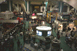

First Quarter, 1995
Welcome to the third electronic version of the ASACMUG newsletter. This issue features a wrapup of the San Francisco MacWorld Expo this year. We also include artices on how to properly send documents to PCs using MS Mail, a review of Adobe Acrobat 2.0, availability of the latest version of Microsoft Office (4.2), and a short explanation of Internet URLs and their implications.
Enjoy and have fun! Remember, we are always looking for ways to make this newsletter useful and enjoyable for you; we want your feedback and comments.
Alex Morando
Newsletter Editor
Table of Contents
- MacWorld Expo January 95
- Sending documents to PCs using MS Mail
- Adobe Acrobat 2.0
- Microsoft Office 4.2 Network Install
- QuickCam - Video for Everyone
- Internet Feature : What is a URL?
- URL Marks the Spot!
- Macintosh News
- Macs in 1995
- Current User Group Specials
[No] President's Column
Instead of our regular President's column, we have a MacWorld wrap-up article written by Kevin Elwell, past president of ASACMUG.
MacWorld Expo San Francisco January `95
The Immediate Future - MacWorld San Francisco
Kevin Elwell (TORMP101.ElwellK)
As mentioned in the last newsletter, MacWorld is a trade exposition sponsored by MacWorld Magazine that is held bi-annually in both San Francisco and Boston. It's a great place to see the latest developments in both hardware and software that are specific to your interests on the Mac. There are training sessions, as well as many interesting forums and discussions.
Every year we usually get together and go for two reasons. One is obvious - to learn about what's new. The other is to capitalize on the best deals that can be had, which this year were fairly great. One of our users spent over $700 on hardware and software, and saved probably three times that much.
What Was Hot?
This is a question that many will answer differently because it all depends on your perspective. Everyone goes to MacWorld with different interests, so most of us split up and get together later to compare notes. If you read Adam Engst's TidBITS, you will have noticed that because he is the author the "The Internet Starter Kit" he saw many things there that were related to networking and to netting [except for the QuickCam digital camera in this issue]. You may notice that my review is somewhat biased towards graphic applications. Anyway, with that qualifier in place here are my notable show pics:
Software:
Emailer - in my humble opinion, this should get the award for the best new software product introduced at the show. Basically they've put a front end on all your various e-mail services (Compuserve, America On-Line, Internet, GEnie, Prodigy, etc., ad nauseam) and this thing will go out and get mail and upload/download whatever you assign it to. It is sort of like Compuserve Navigator in that regard, only it works with anyone's service. It'll be great for people with multiple service providers.
Lightning Draw GX - this product was interesting in that it was the first I've seen to take advantage of the new features offered in System 7.5's GX technology. I'd have to say that there were some very interesting features there that PostScript applications just don't have yet. It worked more like a cross between a vector-based graphics program like ClarisDraw (formerly MacDraw) and a bit-diddler like Photoshop.
XRes by Fauvre - this product has subsequently been written up in MacWEEK, but before the show nobody knew what it was or what it was good for. It's too bad for them too, because I think this one is today where Photoshop will be tomorrow. It's kind of a cross between Photoshop and Live Picture, but with a $600 show price (retail $795). It takes all the commands you give it and stores them to compile the effects on the image at a later time. It was fast, and very easy to manipulate very large files, unlike Photoshop.
A-10 Attack! - this piece was done by Eric "Hellcats Over the Pacific" Parker. This is perhaps the most realistic flight simulator of any I've seen. If you're into flying, and in particular into flying combat aircraft, this is the one to own. They were demonstrating it with a real tactical pilot using both a stick, a throttle module and foot-pedals. They were running with three monitors on a Quadra 800 and flying formation with another A-10. It was incredibly realistic!
Pierce Print Tools - this lets many applications take advantage of GX technology and really adds some sensible functionality to the Apple standard print dialog box. It also adds some neat features to non-GX standard applications.
Personal Secretary by Articulate Systems - this was by far the most practical and neatest integration of voice technology I've seen thus far. Articulate is perhaps the leader in this field for bringing a voice interface down to the level of the masses. You could dictate (albeit slowly) without training your voice and have this dude actually type a letter for you. For those who are keyboard impaired, this is certainly a viable alternative, although you'll spend more than $2K.
WordPerfect - if you wanted a free umbrella (and you would've needed one - it never stopped raining) the Word Perfect booth was the place to be. You had to wait a very long time, but the demonstration was worth it. They've really improved the product. It's faster, has support for GX, AppleEvents, Drag-N-Drop, and has a better interface than ever before. Best of all, their show price was only $79.
Hardware:
Zip Drive - most pundits give the nod to the new zip drive from Iomega. It's a little larger than an external SuperDrive (floppy), and the disks will hold 100 MB and are priced at $19.95. The drive itself will only set you back about $200, so there's a good chance that this will receive wide acceptance among Mac and PC users. The picture below compares the relative sizes of a 100 meg Zip and a regular 1.4 meg floppy disk.
Visioneer PaperPort - I saw this advertised and really wasn't that interested in what appeared to be a re-packaged scanner. However, this product was much more than meets the eye. It is low-end version of Wang's high end imaging technology. Best part about this was its speed (up to 12 pages a minute) and seamless integration with the Mac O/S. After loading the software and plugging in the hardware via the ADB, all one has to do to "get a doc into the Mac" is to feed the paper into the device. After that you have the choice to fax, print, or whatever to the scanned image. It worked very quickly, which is very uncharacteristic of most scanners. For $300 it would be a steal for someone running an office out of the home. This gets my award for best new hardware product.
QuickCam - people were lined up 10 deep to buy a $100 video camera that works with the Mac. This little ball-like lens sits atop your computer, has a built in microphone, and takes black and white images at the rate of 15 frames/second. You can create your own QuickTime movies, or just do a real quick set of stills. It was very easy to use and the price was right - Connectix couldn't take the money from people fast enough. [A more detailed review appears later this issue - ed.]
Liberty 4.2 GB Hard Drives - Liberty was selling the smallest 4.2 Gigabyte hard drive I've seen. It was very light as well. Not cheap, but if you want to put everything in one place and take it with you, this was the only way to go.
Trends: seems like I saw about ten vendors selling paging or mobile service links via the Mac. Mobile communications are certainly looking more and more mainstream. RAID and higher-end disk storage devices were becoming more prevalent as well.
I hope you found something interesting above, and that you'll consider joining ASACMUG in San Francisco next January.
Sending documents to PCs using
MS Mail
Alex Morando
Businessess are becoming more electronically connected, and workers at AlliedSignal are no exception. This article will explain how to be compatible and cooperative with the dominant mail standard at AlliedSignal - Microsoft Mail. With these tips and a little practice, those of us using Macs can be 100% compatible with those who are using PCs (at least until they replace your desktop Mac with a PC). Since the Mac is the minority, the burden of compatbility falls on us. This tutorial assumes that users know how to address their email messages, attach files, and maintain their Address Books.
Finding the address
The first thing is to find out the address of the person you want to send documents to. All MS Mail addressess are specified using the DGN.DEN convention - the DGN refers to the "post office" holding that person's mailbox, and the DEN is the person's name from the post office's point of view. Most of the time, the DGN is an eight-character specification of the SBU site, and the mailbox number of that post office. For example, TORMP104 is the 104th mailbox in Torrance, while TMPMP001 is the 1st mailbox in Tempe. The DEN is usually the first six characters of the person's last name plus his or her initial. A Jim Morrision who works at the 67th mailbox in Torrance would thus have a DGN.DEN of TORMP067.MorrisJ.
The DGN.DEN can usually be determined from the mail you receive from that person. If you are initiating the message, you may have to search for that person's name. This is done by using the SSW Directory Search form shown below. From the main MS Mail window, scroll down and click on the SSW Dir? form.
SSW Directory Search (bottom button - see right)
Fill in the person's last name in the space provided and send the message. An automatic response will be delivered to your mailbox within 24 hours, and should provide the DGN.DEN of the person you're looking for. You may add this name to your personal mailbox, or have MS Mail add it for you automatically.
SSW Directory Search Form (entering last name)
Formatting your document
There are two steps necessary to make your documents readable by PCs. First, you have to save it in a PC-compatible format. Since MS Office is the standard, there is no need to worry about compatibility, since files saved in Word 5.1/6.0, Excel 4.0/5.0, and PowerPoint 3.0/4.0 are compatible between Macs and PCs without having to use special translators like MacLink Plus or Apple File Exchange. Those who use other programs have to find ways to write in any of the MS Office formats. For example, both WordPerfect and MacWrite Pro can create Word files using Claris' XTND technology. For simple documents, the translation is perfect; more complex documents may require additional work to make them fully compatible.
Sample XTND dialog box
(saving as a Word document)
Other file formats that are PC-compatible include TIFF and EPS for graphics, Text (with DOS linefeeds) for text-only data, and DBF for database data. There are a large number of other cross-compatible file formats, and MacLink translation software may be necessary for some of the less-common formats.
The second step is to rename your document. Unlike Macs, PCs are limited to an 8.3 character filename. Shorten your filename to this standard. For example, your Word file "Letter to Jim Jan 95" might be renamed to "LTRJIM95.DOC" before sending it via MS Mail. One technique I use is to make a copy of my document and rename that copy before sending it as an MS Mail attachment. This way, I am constrained by a descriptive 31-character filename instead of an 8.3 filename.
Sending your document
One common mistake is to send attached documents using the default Note or 80 column forms. Documents sent using these forms may not reach PC users correctly. 1) Scroll down the forms list and select the Message form. This allows you to send your documents in PC format. 2) Click on the To: field to specify your recipient, 3) write your message in the (small) text box in the lower left, 4) click on the Attach: button to select files you want to send. 5) Look at the three file format buttons on the lower right corner and select the button titled "Mail as a DOS file". 6) You can now click on the Send button to mail your files.
Message forms from MS Mail (above arrow)
Message form with "Mail as DOS
file"
selected (see lower right corner)
Adobe Acrobat 2.0 - All of the
benefits of Paper without the chase
Jim Alley
Savannah (GA) MUG
"People add value to electronic documents with bookmarks, links, and jumps that are lost when they are printed." -- John Warnock, Adobe Systems Inc., interviewed in Wired magazine.
The quality and accessibility of paperless documents has moved up a notch with the release of Adobe Acrobat 2.0. Acrobat technology had already established itself as the most accurate of the "digital paper" formats, and the latest version adds a slew of new features to the mix: a free Reader, security, and improved navigation.
Acrobat technology allows for the creation and electronic distribution of documents created from any application--word processors, page layout programs, spreadsheets, and databases. Any document that can be printed can be created in Acrobat format. The person receiving the file can view the document on-screen or print it without the need for the original program, the fonts used to create it, or the associated graphics files. Furthermore, Acrobat technology spans most computer platforms, including Mac, Windows, DOS, or UNIX.
Documents can be electronically distributed without the need for costly printing, bulky mailing, or mechanical duplication.
The addition of a free Reader for PDF (portable digital format) documents will allow Adobe to regain some of the market which was earlier lost to the competition. Previously, anyone who wanted to view or print an Acrobat document had to purchase a copy of the Acrobat Reader. Other companies allowed the embedding of a viewing mechanism within the document itself. This approach proved to be popular in the marketplace, despite the fact that documents with embedded viewers were significantly larger than their Acrobat counterparts. By providing a single (free) viewer, the Acrobat system avoids the duplication of having a viewer embedded in each document.
Acrobat Reader 2.0 will be available free from online services, or directly from Adobe for a small shipping and handling fee. (SMUG members will be able to obtain the Reader at monthly meetings or from our local bulletin board.) In a somewhat surprising development, Apple has announced that the new Reader will be pre-installed on the hard drives of all Macs with over 5MB of RAM. Whatever the motivation behind this move, it is certain to make the Acrobat system more of a standard.
Another factor which contributes to the compact size of Acrobat documents is the built-in compression offered by the Acrobat Distiller program. In our tests, distilled Acrobat files were often one-third the size of Common Ground files. In fact, distilled files are often smaller than the original document files from which they are created.
Security. If you want to restrict the privileges for an Acrobat document, you can choose from several options when you save the file. You can enable or disable the following: printing, changing the document, adding and changing notes, and selecting text and graphics.
Searching is a major new capability. You can perform full-text searches across multiple documents--even those on a network. The drawback for Mac users is that the program which creates the catalog file is only available on the Windows platform. We hope that this oversight is quickly remedied.
Navigation. Cross-document links allow a document's creator to create links that will open other Acrobat files.
There are several new viewing options. Fit Visible automatically chooses the appropriate zoom level to display only the visible elements on a page, thus eliminating empty white space in margins. The new Full Screen mode displays documents without toolbars or other user interface elements. This mode is great for making presentations. Preferences allow for automatic or manual advancing of pages.
There are many other improvements in Acrobat 2.0--more than we can deal with here. All of these add up to an improvement in the way we can create and use paperless documents by helping us to create documents more quickly, more efficiently, and to view and/or print them with an ease heretofore unknown.
by Jim Alley
(c) 1994 The Savannah Macintosh Users Group
[Acrobat 2.0 is available in the ASACMUG BBS in the Software Library:Applications folder and comes with a limited version of Adobe Type Manager (ATM). - Ed.]
The Adobe Acrobat 2.0 Product Line
The Adobe Acrobat 2.0 product line consists of Adobe Acrobat Reader 2.0, Adobe Acrobat 2.0, Adobe Acrobat Pro 2.0, and Adobe Acrobat for Workgroups. Adobe Acrobat 2.0 software is available for Applereg. Macintosh and Microsoftreg. Windows platforms. Adobe Acrobat 2.0 products include the following components:
The Packages
- Acrobat Reader 2.0 is the tool for viewing, navigating and printing PDF files.
- Adobe Acrobat 2.0 is targeted for general office users. It includes the new Acrobat Search, Acrobat Exchange, PDF Writer for creating PDF files from common business applications and Acrobat Reader for Macintosh, Windows, UNIX and DOS.
- Acrobat Pro 2.0 is packaged to meet the demands of corporate and commercial publishers creating visually rich documents with applications and fonts using Adobe PostScript(TM) technology. The package comes standard with Adobe Acrobat 2.0 software, plus Acrobat Distiller(TM) for Macintosh 680X0, Power Macintosh(TM), or Windows and Acrobat Reader for Macintosh, Windows, UNIX, and DOS.
- Acrobat for Workgroups 2.0 is a collaborative application that lets Workgroups get the most out of large volumes of information available on a network. It includes Acrobat Catalogs a Windows application that creates full-text indexes for collections of PDF files shared over a network of Macintosh and Windows users, allowing them to find information instantly with Acrobat Search. Acrobat for Workgroups also includes 10 licenses for Adobe Acrobat 2.0 software for Macintosh or Windows, plus Acrobat Distiller(TM) for Macintosh 680X0, Power Macintosh(TM) or Windows and Acrobat Reader for Macintosh, Windows, UNIX and DOS.
The Components
Acrobat Reader software is the tool for viewing, navigating, and printing electronic documents. The program lets users display and print documents in the PDF format and use navigation features such as article threads, annotations and links. Versions of Acrobat Reader run on DOS, Windows, Macintosh and UNIX systems. Acrobat Reader will be included with all Adobe Acrobat 2.0 products and is available free of charge from on-line services, the Internet and from Adobe for a nominal shipping and handling fee.
Adobe Acrobat 2.0 software enables users to create PDF files with PDF Writer from any standard desktop application.
Acrobat Exchange 2.0 lets users view and print PDF files as well as annotate, build navigational links into and add security controls to PDF files.
Acrobat Search is a new feature in Acrobat Exchange that lets users retrieve PDF files by conducting full-text searches of indexed PDF files. With the TOPIC(TM) Search Engine, licensed from Verity, Inc., users can search full document texts--including charts, graphs, and captions--by key words, phrases, proximity, word stemming, synonym, and other parameters.
Acrobat Distiller converts any PostScript language files created with DOS, Windows, Macintosh, or UNIX applications into PDF files. It can be used with files from drawing, page layout or image editing programs; documents containing high-resolution or Encapsulated PostScript (EPS) language artwork or images; or documents containing complex blends or gradient fills.
Acrobat Catalog creates full-text indexes for collections of PDF files shared over a network of Macintosh and Windows users, automatically building on-line indexes of all PDF files. This enables users to manage large volumes of information on a network. (Only available on Windows format.)
Microsoft Office 4.2 Network Install
--- ---------
Last December, Microsoft announced that the latest version of MS-Office (4.2) is finally available for the Mac. Office includes Excel 5.0, Word 6.0, and PowerPoint 4.0 (MS-Mail remains at version 3.1). It came to the local ASACMUG office on 29 high-density floppy disks (the PowerMac version comes on 39 disks). Updated versions of Excel (5.0a) and Word (6.0a) are due by the end of March, 1995.
Since AlliedSignal has a site license for Office, and that most people would rather not spend an hour or more installing from floppies, ASACMUG has made the network installation of MS-Office available through the ASACMUG BBS.
60 megabytes of free disk space and 8 megs of RAM is required for a normal installation. Quit all programs except the Finder. If you do not have the required disk space, you may install only certain programs instead of the entire Office suite. The upgrade is worthwhile if you have at least a IIci (25MHz 68030). It will run on LCs and IIsi's, but the performance and speed will leave much to be desired.
Logon to the Engineering Keyserver (on the AES-TOR-ETHERTALK zone) as a Guest, and select the Microsoft Office Install server from the list of possible servers. Double click on the Install Me First icon; this will begin the install process. Select either the default or custom installation; if you select a custom install, you will have a choice of which programs and features to install (and how much disk space each feature will occupy). Finally, click on the Install button. After this, the process is automated and the user can do something else while his or her machine is upgraded.
QuickCam - Video for Everyone
Mark H. Anbinder, Editor - TidBITS #259
mha@baka.ithaca.ny.us
The FCC approved it just a tad too late for most stores to stock up for holiday gift sales, but the QuickCam video camera for Macintosh computers should prove a winner for Connectix. It's the successful software company's first venture into the peripheral market.
QuickCam has a retail price of $149, though it sells for about $99 through dealers and some mail-order outlets. In fact, just about the only users who received their cameras in time for holiday gift-giving are those who ordered from MacConnection at the Macworld Expo in August. The backlog should be clearing up as you read this, though a new run of orders at January's Macworld Expo may set them behind again.
Suddenly, desktop video is within reach of almost any Mac user's budget. A small grey sphere about the size of a billiard ball, with its own removable triangular stand, QuickCam connects to any QuickTime-compatible Macintosh (one with 68020 processor or better) through either built-in serial port [printer or modem]. Since no specialized cards are required, it doesn't matter whether your Mac has NuBus slots, multimedia slots, or anything else - just a free modem port or printer port. Almost any PowerBook is a perfect candidate.
[Actual diameter is 2.2 inches]
The first-generation QuickCam provides sixteen shades of grey, but Connectix plans to produce a color model later in 1995 if the initial unit sells well. It's perfect for videoconferencing, learning how to make QuickTime movies, or even taking still greyscale snapshots.
Two applications come with the camera, one for creating QuickTime movies and the other for capturing still pictures. The former can combine the camera's digital video signal with sound input, using your Mac's microphone (if it has one) or the microphone built into the QuickCam itself. Connectix recommends you use the Mac's microphone given the choice; QuickCam's isn't particularly high quality, and using it limits the bandwidth available in the serial cable for video signal. Also included with the QuickCam is a picture framing utility and an After Dark-compatible screen saver module. QuickCam owners who return their registration card will receive a CD-ROM containing sample video files and additional utilities.
Speaking of video signal, Connectix has bypassed the loss of picture quality inherent in the process of converting analog video to digital signals. QuickCam generates a pure digital signal and sends it straight through to the QuickTime software running on the Mac. Camcorders and most other video cameras send out an analog NTSC video signal that then must be converted into digital information before the Mac can use it. This conversion can (especially with cheaper equipment) result in jitters, snow, or other degradation in quality. QuickCam avoids all this.
Are there any practical uses for a QuickCam so far? Absolutely. Even if you don't consider four-bit greyscale sufficient for your next cinematic masterpiece, it's plenty for videoconferencing on even low-bandwidth networks like LocalTalk or medium-bandwidth connections to the Internet. Cornell University's freeware CU-SeeMe videoconferencing application (designed specifically to use TCP/IP protocols as found on the Internet) now supports QuickCam. Since CU-SeeMe is also limited to 16 shades of grey, it's a match made in heaven.
ftp://cu-seeme.cornell.edu/pub/video/
In addition, Connectix is working on QuickCard, a utility designed to let people easily make multimedia greeting cards, complete with audio and video from the QuickCam and other embellishments provided by QuickCard.
A QuickCam certainly won't make you the next Fellini, but for about a hundred bucks, it's an easy investment to justify even if you just want to play around. For additional information about the QuickCam on the Web, check out these sites:
http://www.engin.umich.edu/~friscolr/QuickCamtm/readme.html
http://www.indstate.edu/msattler/sci-tech/comp/hardware/quickcam.html
Information from:
Connectix
Cornell University
Internet Feature : What is a
URL?
Alex Morando
As you may have noticed in the previous article, there are weird references that look like this:
http://ase15.tor.allied.com/www/home/AES_home_page.html
What are these "things?". They are called Uniform Resource Locators (URLs). A URL defines a files location on the world-wide Internet and is the basis upon which the World Wide Web (WWW) operates. You may be more familiar with one Internet program used to browse the Web: Mosaic.
Suffice it to say that the URL defines three things: the protocol used to retreive the file, the machine on which the file resides, and the name of the file, including its path within the machine. The most common protocol is HyperText Transport Protocol (http), currently the dominant method used to retreive files on the WWW. Thus, the URL above refers to a HyperText Transport Protocol document, located at the machine ase15.tor.allied.com, in the directory path /www/home, with a filename of AES_home_page.html.
The following article is one person's viewpoint on the importance of URLs in defining the future direction of the Internet.
URL or Not: URL Marks the Spot!
Gerard Martin <martin@usl.edu>
It has been suggested that the metaphor of an information superhighway is weak and tired. After all, how many of us live on a four-lane interstate? An alternative metaphor for this speedily growing twenty-first century infrastructure is that of a space: space for what will amount to a living repository of living data, live data about more living data, and - as a process - active participation in the lives of many people.
In William Shatner's "TekWar," a counter-culture knowledge worker asserts that he lives "in there" as he points to the computer workstation that "gateways" to his world. William Gibson first gave us the word "cyberspace" for a machine-created space in his depiction of a world in which one dwells and - we assume - where one stores many, many things. Few today profess to living in cyberspace, yet some of us log incredible hours online. Therefore, it cannot be for naught that the Internet has been labeled by one recent news magazine as the "hang-out" of the nineties, a soda- fountain of good reading and good conversation, a regular ethereal haven of new vibes.
The Internet blossomed on the day when "browsing the World-Wide Web" gave "cruising the net" a whole new meaning. For me, the transition began when our system administrator added the University of Kansas Lynx hypertext browser to our Internet programs. Long before experiencing the multimedia sensation of Mosaic, MacWeb, or Netscape, I recognized something that I had needed for a long time - a stable addressing protocol. Despite long-standing efforts with the FTP/Archie and the Gopher/Veronica/Jughead systems to connect users to files, resources could come and go in a way that defied anyone's attempt sustain the metaphor of a global data repository. I once described the Internet as a library where each day introduced new titles while old titles were removed from dustier virtual shelves. That more titles were being added than removed proved little solace when I received a "Resource Not Found" message.
The day that saw the introduction of the more stable URL (Uniform/Universal Resource Locator) helped change this forever. Since then, the very description of "uniform" is often replaced by the promise of "universal" in a way that strengthens the dream of open-system document addressing. It should come as little surprise that Forbes Magazine would suggest the dissolution of Dewey Decimal System: imagine every infinitely retrievable document or document entry with its own unique Internet-resident address.
For years, people criticized the Internet for its lack of a glossary-style index of cross-references. The Internet as encyclopedia was a poor choice of metaphors. Such a global task at one time seemed unapproachable. Yet, no one questioned that this Internet of networked computers **could** serve as a suitable dwelling for digital materials of, at the very least, alpha- numerical potential. However, beyond the conduit and the content there was the inevitable loss of context. Fortunately, the client/server paradigm slowly began to make sense of it all.
We have all seen stereotypical, dystopian end-of-the-world scenes of desolation and disaster: the most haunting visions are those of empty highways devoid of people and traffic. We all somehow know that this is not the world in which we want to live. Fortunately, the traffic on the Internet carries - with the increasing volume of participants and their resources - an increasingly high density of "URL embeddedness." I connect my data to yours and you connect yours to mine - already two points of access and reference exist for readers everywhere. Of course, this has profound implications for the emerging issue of network document copyright legislation. When the very act of browsing precipitates a file transfer, the tabulation of these transfers should not be construed as having any immediate commodity value for the purpose of consumption, use or gratification.
Clearly, a metaphor that attempts to encompass both a community and its resources will supersede a metaphor that seeks only to extend transit. This is the claim to universality made by those trading documents using the URL resource-labeling system. For those who have experienced hot-text and clickable fields, the seamlessness can be utterly amazing. Where Gutenberg's press introduced the medium of movable type, the World-Wide Web begins to plug more than molten lead into the spaces that will connect our worlds together.
Macintosh News
[Recent press releases]
Apple's Record Revenues, 1 Million Power Macs Shipped
CUPERTINO, CALIFORNIA, U.S.A., 1995 JAN 20 (NB) -- Apple Computer, Inc. has reported record revenues, and earnings for its first fiscal quarter, which ended December 30, 1994. The "teenage" personal computer maker also announced that it has shipped its one millionth Power Macintosh computer or upgrade based on the PowerPC microprocessor.
Company spokesperson Eric Wee told Newsbytes these shipment of 1 million Power Macintosh systems or upgrades is quite an accomplishment. Wee points out only 10 months have passed since the introduction of Power Macintosh systems and sales have well exceeded forecasts by Apple and by industry analysts. Wee told Newsbytes there are now 450 Power Macintosh applications shipping which have been optimized to take full advantage of the high performance of the reduced instruction set computer (RISC)-based Power Macintosh system.
In commenting about Apple shipping its 1 millionth Power Macintosh system/upgrade, Michael Spindler, Apple's president and chief executive officer, said, "Apple took the lead," in 1994 "bringing RISC technology to mainstream personal computing." According to Spindler, "We (Apple) embarked on a major transition in our business." Spindler also said that the one million unit milestone is "a testament to our (Apple) customers' acceptance of Power Macintosh as their platform for the future, and to Apple's ability to deliver on its objectives."
Apple expects its revenues to grow as MacOS licensees get their products to market and systems based on the new PowerPC common hardware platform jointly developed by Apple, IBM and Motorola, also are produced. This hardware platform announced in November 1994 is intended to be capable of running multiple operating systems, including the Macintosh OS, Warp/OS2, and Windows NT.
Company spokesperson Lynne Lawler told Newsbytes the "improved earnings were the result of strong revenue growth combined with higher gross margins as a percentage of net sales." Lawler added gross margins improved to 28.7% of net sales in the first quarter of fiscal 1995 from 24.0% of net sales in the same period a year ago. Lawler attributes the increase in gross margins primarily to the introduction and sale of new higher margin products, including Power Macintosh computers.
Motorola Rings in 1995 With the Launch of the Marco(TM) Wireless Communicator
MACWORLD Attendees Get First Look at the World's Only Newton-Based Integrated Wireless Hand-Held Device
SAN FRANCISCO, Calif. -- January 4, 1995 Today at MACWORLD, Motorola's Wireless Data Group (WDG) introduced the Marco Wireless Communicator, the first wireless communications device based on Apple's Newton platform, the industry's leading hand-held operating platform. The Marco Wireless Communicator integrates two- way, wide-area wireless communications into the Newton platform and operates on ARDIS, the industry's premier wireless data communications network.
Without plugging in to a phone line, the Marco device allows users to exchange messages with their workgroups and the Internet, access company or industry-specific information using custom wireless applications, send wireless messages to fax machines and receive wireless news and stock market updates. This product is ideal for mobile professionals and users in
specialized markets including sales automation, real estate, healthcare, financial services and field service.
Marco Communication Network and Services
The Marco communicator currently runs on the ARDIS network, the world's leading wireless data communications network. ARDIS provides on-street, in-vehicle and in-building coverage to 90 percent of the business areas in the United States. This includes 400 metropolitan areas including 10,700 cities and towns. Motorola intends to expand its support to include other networks, including RAM Mobile Data and CDPD, based on customer feedback.
For wireless messaging, the Marco Wireless Communicator will be available with both RadioMail and ARDIS PersonalMessaging services. Users can sign up to have both services, or choose just one.
[The Marco can run hundreds of applications now available for the Apple Newton and Sharp ExpertPad PDAs]
Design and Specifications
The Marco Wireless Communicator's ergonomic design allows it to fit conveniently into a briefcase, handbag or compact carrying case. The Marco product weighs 1.8 pounds and is 7.5 inches high, 5.8 inches wide and 1.4 inches deep. The device features a portrait screen that is bright and crisp to allow easy reading in many lighting conditions. The pen is carefully weighted to feel more like a traditional pen. The edges are tapered and the casing is dark to allow the unit to survive the wear and tear of constant use.
The Marco device provides users with 1MB of internal memory and a PCMCIA Type II slot for memory expansion, software flexibility and access to wireline fax modem and other peripherals. Communication between devices is also supported via a Newton-compatible infrared port. Connection to the desktop or to printers is handled via an Appletalk-compatible serial port. The device features a NiCad battery that provides users with up to eight hours of run time.
Pricing, Distribution and Availability
The street price of the Marco device is likely to range from $900 to $1,400, depending upon the system bundle that users choose. Prices for peripherals are set by their respective vendors and Motorola envisions a wide range of services with different pricing structures.
The Marco device will be available in January 1995. Some of the initial dealers are:
- J&R ComputerWorld, New York, New York
- Newton Source, New York, New York
- Totally Wireless, San Jose, California
For general information on Motorola's wireless solutions and other Marco dealer locations, users can call 1-800-8WIRELESS.
Macs in 1995
Jason Newquist
jrnewquist@ucdavis.edu
March 31, 1995
Spring Back-to-School promotion. Bundles galore to help clear out inventory of 575/630/6100/7100/8100s.
May 31, 1995 - Prices drop on high end machines (8100/100, 8100/110) as much as 33%, others to a lesser extent. The following machine will be introduced at this time:
- PowerMac 9400/120 [Tsunami]
New "fat tower" case, 604 @ 120Mhz [possibly 150Mhz], 6 PCI slots, $5,400 (retail, expect street pricing of $4999)
July 31, 1995 - All 68K desktop machines and NuBus PPC machines discontinued.
- PowerMac 5300/75
Redesigned 575-style machine, Looks like a Multiple Scan 15 with a little extra trim on the bottom to accommodate a mother board, floppy slot, etc. This is the first 603e machine and will be available at first for K-12 only.
603e @ 75Mhz, IDE internal hard drive, 1 PCI slot, not upgradeable to other processors, $1,500 - PowerMac 6300/75
630-style case, 603e @ 75Mhz (possibly a 601 instead), IDE internal hard drive, 1 PCI slot, not upgradeable to other processors, $1,200 - PowerMac 7150/80 [TNT]
New-style cross 630/7100 case, 601 @ 80Mhz [possibly 100Mhz], 3 PCI slots, 1 DAV, 1 Video-PCI, $2,000 - PowerMac 8400/100 [Nitro]
8100 case, 604 @ 100Mhz [possibly 120Mhz], 3 PCI slots, 1 DAV, 1 Video-PCI, $3,000
All the new Macs will be using the fabled dynamic compilation emulator that we've heard so much about. So this means that TNT (601@80MHz) will be emulating at something like 2-3x the speed of your stock 8100/80. Emulation on the 604s will feel like native code running on a 6100/60 or better. Until Intel releases their P6 machines (or 200MHz Pentiums) it looks very clear that Apple's 604s (Nitro and Tsunami) will be the fastest mainstream desktop offerings. By far.
And given what rumblings I've heard about the positive 604 yields, and other things, it looks like Apple will soon ramp up everything (except PowerBooks) to the 604. The 604 seems like it's going to be the processor of choice until we get a clear successor (nobody seems to think that the 620 will go into desktops). Anyway, enough speculation. If there are updates... I'll post what I find. All prices are ApplePrices, expect a 10-15% reduction for actual prices from your local store.
To take advantage of these specials, contact Mike Quan (MSMail: Quan, Mike, phone: 310-512-3587) for an order and authorization form. Good while supplies last. All items refurbished (90-day warranty) unless noted.
- Performa 575 33 MHz 68LC040, 14" color display (16-bit), 5 Meg RAM, 250 Meg HD, CD-ROM -- $1099.00
- Performa 630CD 33 MHz 68LC040, 250 Meg HD, CD-ROM, PowerPC upgradeable. 4 Meg RAM -- $1199.00 8 Meg RAM -- $1299.00
- StyleWriter II 360 dpi injet printer, networkable using GrayShare -- $189.00
- Performa Plus Display 14" monitor, 640x480 display, 0.29mm dot pitch, low-radiation -- $169.00
- Performa 630CD 33 MHz 68LC040, 4 Meg RAM, 250 Meg HD, CD-ROM, PowerPC upgradeable -- $1199.00
- InControl 3.0/Quicken 5 bundle personal organizer + personal finance program -- $49.95

The ASACMUG newsletter is an independent publication not affiliated or otherwise associated with or sponsored or sanctioned by Apple Computer Inc or AlliedSignal, Inc. The opinions, statements, positions and views stated herein are those of the authors or publisher and are not intended to be the opinions, positions or views of Apple Computer Inc. or AlliedSignal, Inc.
(c) 1994 ASACMUG Applereg., Macintoshreg., FDHDreg., and Macreg. are registered trademarks of Apple Computer.